> 换环境了，这块不看了
ros2
1.2 wsl安装ros2
一键安装
wget http://fishros.com/install -O fishros && bash fishros
1.3 运行你的第一个机器人
demo
ros2 run turtlesim turtlesim_node
ros2:主命令,调用ROS2框架提供的各种功能
run:ROS2的运行子命令，用于启动ROS2节点
turtlesim:指定要运行的ROS2功能包
turtlesim_node:指定要运行的ROS2功能包中的节点(可执行文件)
[INFO] [1765116673.400203981] [turtlesim]: Starting turtlesim with node name /turtlesim
[INFO] [1765116673.413560607] [turtlesim]: Spawning turtle [turtle1] at x=[5.544445], y=[5.544445], theta=[0.000000]
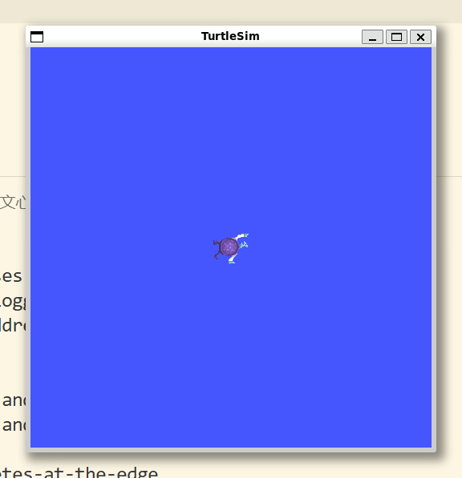
)shenle@shenlepc:/mnt/e/apps/vscode/vsc_css$ ros2 run turtlesim turtle_teleop_key
Reading from keyboard
---------------------------
Use arrow keys to move the turtle.
Use G|B|V|C|D|E|R|T keys to rotate to absolute orientations. 'F' to cancel a rotation.
'Q' to quit.
shenle@shenlepc:/mnt/e/apps/vscode/vsc_css$
```)
)
右边节点向左边节点发送数据cmd_vel(控制命令)
## 1.4
### 1.4.2 linux安装软件
.deb=.exe
eg:
`$sudo dpkg_-i./code_1.77.0-1680085573_amd64.deb`
1.包管理：apt
2.版本管理工具:git
```bash
sudo apt install git3.脚本安装
1.4.3 linux里编写python程序
#!/usr/bin/env python3
print("Hello, World!")shenle@shenlepc:~/gazebo/pythondemo$ ./helloworld.py
Hello, World!
shenle@shenlepc:~/gazebo/pythondemo$ 1.4.5 linux的环境变量
shenle@shenlepc:~$ echo $ROS_VERSION
2
shenle@shenlepc:~$ echo $ROS_DISTRO
humble
shenle@shenlepc:~$ printenv
SHELL=/bin/bash
ROS_VERSION=2
WSL2_GUI_APPS_ENABLED=1
WSL_DISTRO_NAME=Ubuntu-22.04
ROS_PYTHON_VERSION=3
NAME=shenlepc
PWD=/home/shenle
LOGNAME=shenle
HOME=/home/shenle
LANG=C.UTF-8
WSL_INTEROP=/run/WSL/300_interop
LS_COLORS=rs=0:di=01;34:ln=01;36:mh=00:pi=40;33:so=01;35:do=01;35:bd=40;33;01:cd=40;33;01:or=40;31;01:mi=00:su=37;41:sg=30;43:ca=30;41:tw=30;42:ow=34;42:st=37;44:ex=01;32:*.tar=01;31:*.tgz=01;31:*.arc=01;31:*.arj=01;31:*.taz=01;31:*.lha=01;31:*.lz4=01;31:*.lzh=01;31:*.lzma=01;31:*.tlz=01;31:*.txz=01;31:*.tzo=01;31:*.t7z=01;31:*.zip=01;31:*.z=01;31:*.dz=01;31:*.gz=01;31:*.lrz=01;31:*.lz=01;31:*.lzo=01;31:*.xz=01;31:*.zst=01;31:*.tzst=01;31:*.bz2=01;31:*.bz=01;31:*.tbz=01;31:*.tbz2=01;31:*.tz=01;31:*.deb=01;31:*.rpm=01;31:*.jar=01;31:*.war=01;31:*.ear=01;31:*.sar=01;31:*.rar=01;31:*.alz=01;31:*.ace=01;31:*.zoo=01;31:*.cpio=01;31:*.7z=01;31:*.rz=01;31:*.cab=01;31:*.wim=01;31:*.swm=01;31:*.dwm=01;31:*.esd=01;31:*.jpg=01;35:*.jpeg=01;35:*.mjpg=01;35:*.mjpeg=01;35:*.gif=01;35:*.bmp=01;35:*.pbm=01;35:*.pgm=01;35:*.ppm=01;35:*.tga=01;35:*.xbm=01;35:*.xpm=01;35:*.tif=01;35:*.tiff=01;35:*.png=01;35:*.svg=01;35:*.svgz=01;35:*.mng=01;35:*.pcx=01;35:*.mov=01;35:*.mpg=01;35:*.mpeg=01;35:*.m2v=01;35:*.mkv=01;35:*.webm=01;35:*.webp=01;35:*.ogm=01;35:*.mp4=01;35:*.m4v=01;35:*.mp4v=01;35:*.vob=01;35:*.qt=01;35:*.nuv=01;35:*.wmv=01;35:*.asf=01;35:*.rm=01;35:*.rmvb=01;35:*.flc=01;35:*.avi=01;35:*.fli=01;35:*.flv=01;35:*.gl=01;35:*.dl=01;35:*.xcf=01;35:*.xwd=01;35:*.yuv=01;35:*.cgm=01;35:*.emf=01;35:*.ogv=01;35:*.ogx=01;35:*.aac=00;36:*.au=00;36:*.flac=00;36:*.m4a=00;36:*.mid=00;36:*.midi=00;36:*.mka=00;36:*.mp3=00;36:*.mpc=00;36:*.ogg=00;36:*.ra=00;36:*.wav=00;36:*.oga=00;36:*.opus=00;36:*.spx=00;36:*.xspf=00;36:
WAYLAND_DISPLAY=wayland-0
AMENT_PREFIX_PATH=/opt/ros/humble
LESSCLOSE=/usr/bin/lesspipe %s %s
PYTHONPATH=/opt/ros/humble/lib/python3.10/site-packages:/opt/ros/humble/local/lib/python3.10/dist-packages
TERM=xterm-256color
LESSOPEN=| /usr/bin/lesspipe %s
USER=shenle
DISPLAY=:0
SHLVL=1
LIBGL_ALWAYS_SOFTWARE=1
LD_LIBRARY_PATH=/opt/ros/humble/opt/rviz_ogre_vendor/lib:/opt/ros/humble/lib/x86_64-linux-gnu:/opt/ros/humble/lib
XDG_RUNTIME_DIR=/run/user/1000/
ROS_LOCALHOST_ONLY=0
WSLENV=
XDG_DATA_DIRS=/usr/local/share:/usr/share:/var/lib/snapd/desktop
PATH=/opt/ros/humble/bin:/usr/local/sbin:/usr/local/bin:/usr/sbin:/usr/bin:/sbin:/bin:/usr/games:/usr/local/games:/usr/lib/wsl/lib:/mnt/c/Users/25754/AppData/Roaming/Code/User/globalStorage/github.copilot-chat/debugCommand:/mnt/c/Users/25754/AppData/Roaming/Code/User/globalStorage/github.copilot-chat/copilotCli:/mnt/c/Program Files/Common Files/Oracle/Java/javapath:/mnt/c/WINDOWS/system32:/mnt/c/WINDOWS:/mnt/c/WINDOWS/System32/Wbem:/mnt/c/WINDOWS/System32/WindowsPowerShell/v1.0/:/mnt/c/WINDOWS/System32/OpenSSH/:/mnt/e/apps/matlab2022b/bin:/mnt/e/apps/python/Scripts/:/mnt/e/apps/python/:/mnt/c/Users/25754/AppData/Local/Microsoft/WindowsApps:/mnt/e/apps/vscode/Microsoft VS Code/bin:/mnt/c/Users/25754/.vscode/extensions/ms-python.debugpy-2025.16.0-win32-x64/bundled/scripts/noConfigScripts:/snap/bin
DBUS_SESSION_BUS_ADDRESS=unix:path=/run/user/1000/bus
HOSTTYPE=x86_64
PULSE_SERVER=unix:/mnt/wslg/PulseServer
ROS_DISTRO=humble
OLDPWD=/home/shenle/gazebo/pythondemo
_=/usr/bin/printenv
shenle@shenlepc:~$通道grep：过滤出只含有AMENT字样的
shenle@shenlepc:~$ printenv | grep AMENT
AMENT_PREFIX_PATH=/opt/ros/humble
shenle@shenlepc:~$ ros2 run turtlesim turtlesim_node
用下面方法重新实现
shenle@shenlepc:/opt/ros/humble/lib/turtlesim$ ls -alh
total 1.7M
drwxr-xr-x 2 root root 4.0K Dec 6 18:21 .
drwxr-xr-x 77 root root 32K Dec 6 18:21 ..
-rwxr-xr-x 1 root root 348K Nov 19 07:21 draw_square
-rwxr-xr-x 1 root root 311K Nov 19 07:21 mimic
-rwxr-xr-x 1 root root 200K Nov 19 07:21 turtle_teleop_key
-rwxr-xr-x 1 root root 788K Nov 19 07:21 turtlesim_node
shenle@shenlepc:/opt/ros/humble/lib/turtlesim$ ./turtlesim_node
[INFO] [1765118938.091555047] [turtlesim]: Starting turtlesim with node name /turtlesim
[INFO] [1765118938.104460951] [turtlesim]: Spawning turtle [turtle1] at x=[5.544445], y=[5.544445], theta=[0.000000]
^C[INFO] [1765118945.430875430] [rclcpp]: signal_handler(signum=2)
shenle@shenlepc:/opt/ros/humble/lib/turtlesim$ $AMENT_PREFIX_PATH/lib/turtlesim/turtlesim_node
[INFO] [1765119009.281039780] [turtlesim]: Starting turtlesim with node name /turtlesim
[INFO] [1765119009.284799445] [turtlesim]: Spawning turtle [turtle1] at x=[5.544445], y=[5.544445], theta=[0.000000]
^C[INFO] [1765119013.627063038] [rclcpp]: signal_handler(signum=2)
shenle@shenlepc:/opt/ros/humble/lib/turtlesim$ 设置环境变量
临时修改
export AMENT_PREFIX_PATH=/opt/ros/humble
export VARIABLE_NAME=valueros2 run 是在用环境变量找可执行文件
source 在 Linux 中的作用是在当前 shell 环境中执行脚本文件
环境变量的初始值是谁设置的
在装好乌班图没有装ros2之前 ，
AMENT_PREFIX_PATH=/opt/ros/humble这个环境变量不存在
终端启动之后的默认脚本是~/.bashrc
（linux中以.开头的文件或者文件夹是隐藏文件）
~/.bashrc里面含有这个脚本
# >>> fishros initialize >>>
source /opt/ros/humble/setup.bash
# <<< fishros initialize <<<shenle@shenlepc:~$ cat /opt/ros/humble/setup.bash
# copied from ament_package/template/prefix_level/setup.bash
AMENT_SHELL=bash
# source setup.sh from same directory as this file
AMENT_CURRENT_PREFIX=$(builtin cd "`dirname "${BASH_SOURCE[0]}"`" && pwd)
# trace output
if [ -n "$AMENT_TRACE_SETUP_FILES" ]; then
echo "# . \"$AMENT_CURRENT_PREFIX/setup.sh\""
fi
. "$AMENT_CURRENT_PREFIX/setup.sh"
shenle@shenlepc:~$2.1 编写第一个节点（python）
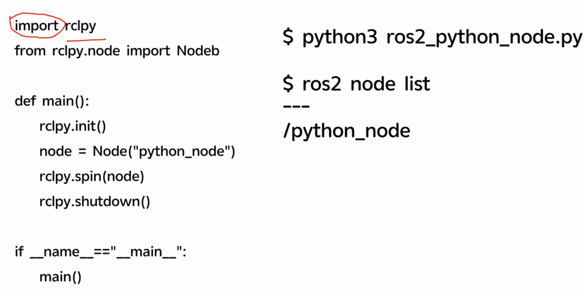
)(第二行更正为 ……Node)
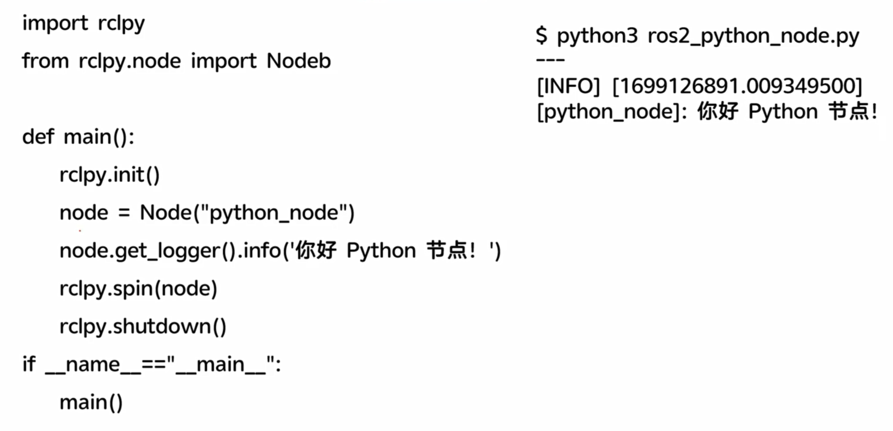
)import rclpy
from rclpy.node import Node
def main():
rclpy.init() #初始化工作，分配资源
node = Node('python_node') # 创造了一个节点，Node类的一个实例
node.get_logger().info('Hello ROS2 Python') # 打印日志信息，调试用
rclpy.spin(node) # 这里是阻塞式的，不断循环检测node这个节点是否受到新的话题，数据，事件等等
rclpy.shutdown() # 主动退出的时候，清理关闭
if __name__=='__main__':
main()
```)
下面是一个ros2的一个标准的日志记录的方法，可以在ros2提供的日志可视化工具内可以看到，用作扩展调试 )
- - -
### 研究下日志
日志的级别
```py
node.get_logger().info('Hello ROS2 Python')
node.get_logger().warn('Hello ROS2 Python') #警告级别
```)
（时间戳是1970年距离当前的秒数）
```bash
export RCUTILS_CONSOLE_OUTPUT_FORMAT=[{function_name}:{line_number}]:{message}{function_name}: 显示输出日志的函数名
{line_number}: 显示输出日志的代码行号
{message}: 实际的消息内容
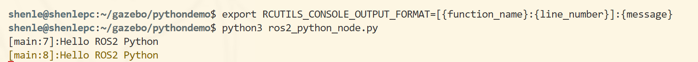
)代码提示原理
py插件通过环境变量找到rcl的库，然后通过库的路径找到源代码，源代码里面有注释，注释里面有提示信息
所以代码没提示是插件没找到库，没连接到库
shenle@shenlepc:/opt/ros/humble/local/lib/python3.10/dist-packages$ cd rclpy
shenle@shenlepc:/opt/ros/humble/local/lib/python3.10/dist-packages/rclpy$ ls
__init__.py expand_topic_name.py qos_overriding_options.py type_support.py
_rclpy_pybind11.cpython-310-x86_64-linux-gnu.so guard_condition.py serialization.py utilities.py
action impl service.py validate_full_topic_name.py
callback_groups.py lifecycle signals.py validate_namespace.py
client.py logging.py subscription.py validate_node_name.py
clock.py node.py task.py validate_parameter_name.py
constants.py parameter.py time.py validate_topic_name.py
context.py parameter_service.py time_source.py wait_for_message.py
duration.py publisher.py timer.py waitable.py
exceptions.py qos.py topic_endpoint_info.py
executors.py qos_event.py topic_or_service_is_hidden.py
shenle@shenlepc:/opt/ros/humble/local/lib/python3.10/dist-packages/rclpy$ cat __init__.py 这里基于wsl的ros2+gazebo要给py加代码提示需要在vsc远程连接状态下的wsl给ubuntu重新安装一个py插件，我懒得安装了
2.2 使用功能包组织python节点
添加依赖声明，规范做法
构建，对文件进行拷贝，包装
实操：
shenle@shenlepc:/mnt/c/Users/25754$ ros2 pkg
usage: ros2 pkg [-h] Call `ros2 pkg <command> -h` for more detailed usage. ...
Various package related sub-commands
options:
-h, --help show this help message and exit
Commands:
create Create a new ROS 2 package
executables Output a list of package specific executables
list Output a list of available packages
prefix Output the prefix path of a package
xml Output the XML of the package manifest or a specific tag
Call `ros2 pkg <command> -h` for more detailed usage.
create - 创建一个新的 ROS 2 包（package），这是 ROS 2 中代码组织的基本单元
executables - 输出特定包中包含的可执行文件列表
list - 输出当前工作空间中所有可用包的列表
prefix - 输出指定包的安装前缀路径
xml - 输出包清单文件（package.xml）的 XML 内容，或输出特定标签的 XML 内容实操创建功能包
ros2 pkg create - 创建新的 ROS 2 包的基础命令 —build-type ament_python - 指定构建类型为 Python 包，使用 ament 构建系统 —license Apache-2.0 - 设置包的开源许可证为 Apache 2.0 demo_python_pkg - 要创建的包名称
shenle@shenlepc:~/gazebo/chapt2$ ros2 pkg create --build-type ament_python --license Apache-2.0 demo_python_pkg
going to create a new package
package name: demo_python_pkg
destination directory: /home/shenle/gazebo/chapt2
package format: 3
version: 0.0.0
description: TODO: Package description
maintainer: ['shenle <shenle@todo.todo>']
licenses: ['Apache-2.0']
build type: ament_python
dependencies: []
creating folder ./demo_python_pkg
creating ./demo_python_pkg/package.xml
creating source folder
creating folder ./demo_python_pkg/demo_python_pkg
creating ./demo_python_pkg/setup.py
creating ./demo_python_pkg/setup.cfg
creating folder ./demo_python_pkg/resource
creating ./demo_python_pkg/resource/demo_python_pkg
creating ./demo_python_pkg/demo_python_pkg/__init__.py
creating folder ./demo_python_pkg/test
creating ./demo_python_pkg/test/test_copyright.py
creating ./demo_python_pkg/test/test_flake8.py
creating ./demo_python_pkg/test/test_pep257.py
shenle@shenlepc:~/gazebo/chapt2$ ls
demo_python_pkg
shenle@shenlepc:~/gazebo/chapt2$创建功能包后编写节点
import rclpy
from rclpy.node import Node
def main():
rclpy.init() #初始化工作，分配资源
node = Node('python_node') # 创造了一个节点，Node类的一个实例
node.get_logger().info('Hello ROS2 Python') # 打印日志信息，调试用
node.get_logger().warn('Hello ROS2 Python') #警告级别
rclpy.spin(node) # 这里是阻塞式的，不断循环检测node这个节点是否受到新的话题，数据，事件等等
rclpy.shutdown() # 主动退出的时候，清理关闭ros2功能包会自动生成可执行文件去调用这个代码，声明再setup.py里面
......
entry_points={
'console_scripts': [
],
},
.......
#更新后
entry_points={
'console_scripts': [
'python_node = demo_python_pkg.python_node:main' #可执行文件名=包.文件:函数
],
},然后在功能包的清单文件加一个依赖声明
vim package.xml
<depend>rclpy</depend>
构建功能包
shenle@shenlepc:~/gazebo/chapt2$ colcon build
Starting >>> demo_python_pkg
Finished <<< demo_python_pkg [0.90s]
Summary: 1 package finished [1.39s]
shenle@shenlepc:~/gazebo/chapt2$
#多出三个文件夹
shenle@shenlepc:~/gazebo/chapt2$ ls -lh
total 16K
drwxr-xr-x 3 shenle shenle 4.0K Dec 8 13:25 build
drwxr-xr-x 5 shenle shenle 4.0K Dec 8 13:22 demo_python_pkg
drwxr-xr-x 3 shenle shenle 4.0K Dec 8 13:25 install
drwxr-xr-x 3 shenle shenle 4.0K Dec 8 13:25 log
产生的目录是和构建命令colcon build的同级目录
build产生的中间文件，install是构建后的文件，log是日志 shenle@shenlepc:~/gazebo/chapt2/install/demo_python_pkg/lib/demo_python_pkg$ ls
python_node从原处
shenle@shenlepc:~/gazebo/chapt2/demo_python_pkg/demo_python_pkg$ cat python_node.py
拷贝到了copy处
shenle@shenlepc:~/gazebo/chapt2/install/demo_python_pkg/lib/python3.10/site-packages/demo_python_pkg$ cat python_node.py
然后上面
shenle@shenlepc:~/gazebo/chapt2/install/demo_python_pkg/lib/demo_python_pkg$ cat python_node 找的main是copy处的main，只有当colcon build后copy处才会更新，或者软链接
（install是发布版，看作release）
接下来执行文件
1.直接找可执行文件
shenle@shenlepc:~/gazebo/chapt2/install/demo_python_pkg/lib/demo_python_pkg$ ./python_node
不成功，需要修改环境变量
export PYTHONPATH=/home/shenle/gazebo/chapt2/install/demo_python_pkg/lib/pytho
n3.10/site-packages:$PYTHONPATH
shenle@shenlepc:~/gazebo/chapt2/install/demo_python_pkg/lib/demo_python_pkg$ printenv | grep PYTHON
ROS_PYTHON_VERSION=3
PYTHONPATH=/home/shenle/gazebo/chapt2/install/demo_python_pkg/lib/python3.10/site-packages:/opt/ros/humble/lib/python3.10/site-packages:/opt/ros/humble/local/lib/python3.10/dist-packages
shenle@shenlepc:~/gazebo/chapt2/install/demo_python_pkg/lib/demo_python_pkg$ ./python_node
[INFO] [1765173237.712842295] [python_node]: Hello ROS2 Python
[WARN] [1765173237.713243559] [python_node]: Hello ROS2 Python成功
py节点，运行方式就是找环境变量再找功能包
- 脚本setup.bash修改环境变量 setup.bash修改所需的环境变量（不止一个,修改多个）
shenle@shenlepc:~/gazebo/chapt2$ source install/setup.bash
shenle@shenlepc:~/gazebo/chapt2$ printenv | grep PYTHON
ROS_PYTHON_VERSION=3
PYTHONPATH=/home/shenle/gazebo/chapt2/install/demo_python_pkg/lib/python3.10/site-packages:/opt/ros/humble/lib/python3.10/site-packages:/opt/ros/humble/local/lib/python3.10/dist-packages
shenle@shenlepc:~/gazebo/chapt2$ printenv | grep AMENT
AMENT_PREFIX_PATH=/home/shenle/gazebo/chapt2/install/demo_python_pkg:/opt/ros/humble
shenle@shenlepc:~/gazebo/chapt2$ ros2 run demo_python_pkg python_node
[INFO] [1765173760.891392872] [python_node]: Hello ROS2 Python
[WARN] [1765173760.891811868] [python_node]: Hello ROS2 Pythonpython功能包结构分析
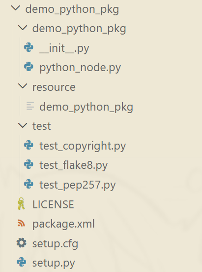
)第一个demo_python_pkg名字要和功能包保持一致，放置节点代码的目录，
init.py是py包的标识文件(内容空)，说明他是个py包,
第二个resource是资源文件，比如图片、视频等
第三个test是测试文件，测试代码是否符合规范，结合测试相关指令（大型项目重要）
第四个LICENSE是许可证文件，开源项目很重要,保护版权
第五个package.xml是功能包清单文件，描述了包的元数据信息，声明了功能包的名称，版本编号，构建类型，依赖信息等
第六个setup.py是功能包构建脚本文件，用于指定如何构建
第七个setup.cfg是普通文本文件，放置py包的构建选项，在构建时会被读取
2.4 多功能包的最佳实践workspace
一个完整的机器人项目往往由多个不同的功能模块组成，每个模块都是一个独立的功能包。为了方便管理和构建这些功能包，通常会创建一个工作空间（workspace）来组织它们。
创建workspace: makdir -p chapt2_ws/src
shenle@shenlepc:~/gazebo$ mkdir -p chapt2_ws/src
shenle@shenlepc:~/gazebo/chapt2$ mv demo_python_pkg/ ../chapt2_ws/src/
shenle@shenlepc:~/gazebo$ mv chapt2_ws chapt2/
shenle@shenlepc:~/gazebo/chapt2$ rm -rf build/ install/ log/
shenle@shenlepc:~/gazebo/chapt2$ cd chapt2_ws/
shenle@shenlepc:~/gazebo/chapt2/chapt2_ws$ colcon build
[0.696s] WARNING:colcon.colcon_core.prefix_path.colcon:The path '/home/shenle/gazebo/chapt2/install' in the environment variable COLCON_PREFIX_PATH doesn't exist
[0.696s] WARNING:colcon.colcon_ros.prefix_path.ament:The path '/home/shenle/gazebo/chapt2/install/demo_python_pkg' in the environment variable AMENT_PREFIX_PATH doesn't exist
Starting >>> demo_python_pkg
Finished <<< demo_python_pkg [1.05s]
Summary: 1 package finished [1.60s]
shenle@shenlepc:~/gazebo/chapt2/chapt2_ws$ shenle@shenlepc:~/gazebo/chapt2/chapt2_ws$ colcon build --packages-select demo_python_pkg只构建这一个包
功能包的依赖关系可以通过xml里面来改变
比如py的包依赖于cpp的包，可以在py的xml里面添加cpp的依赖，则会先构建cpp的包，再构建py的包
2.5 ros2基础编程
面向对象编程
面向对象编程都可以创建类，类是对事物的封装
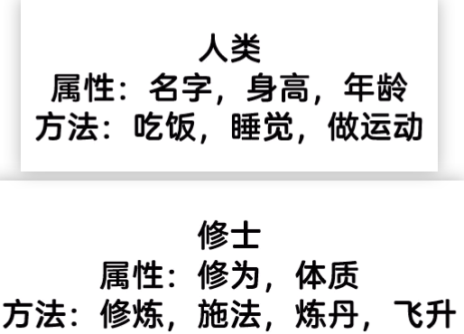
)实例化
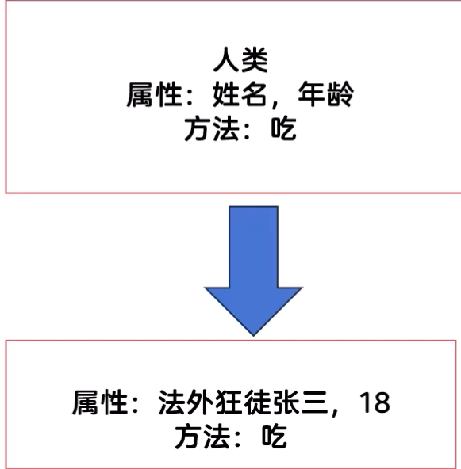
)
classPersonNode:
def__init__(self, name:str, age:int)-> None:
self.age = age
self.name = name
def eat(self, food_name:str):
print(f'我叫{self.name},今年{self.age}岁,我现在正在吃{ food_name}')通过继承创建一个新的类，省事
eg:通过“人类”的类创建“作家”的类
class PersonNode:
def __init__(self,name_value: str ,age_value: int) -> None:
self.name = name_value #属性
self.age = age_value
def eat(self,food:str): #方法
"""
方法:吃东西
参数:food-食物名称
"""
print(f"{self.name} is eating {food}.")
def main():
node = PersonNode("Alice", 18)
node.eat("apple")setup.py
entry_points={
'console_scripts': [
'python_node = demo_python_pkg.python_node:main', #可执行文件名=包.文件:函数
'person_node = demo_python_pkg.person_node:main',
],
},shenle@shenlepc:~/gazebo/chapt2/chapt2_ws$ colcon build
shenle@shenlepc:~/gazebo/chapt2/chapt2_ws$ source install/setup.bash
shenle@shenlepc:~/gazebo/chapt2/chapt2_ws$ ros2 run demo_python_pkg person_node
Alice is eating apple.
```)
- - -
### 继承
```python
from demo_python_pkg.person_node import PersonNode
class WriterNode(PersonNode):
def __init__(self,name:str,age:int,book:str)->None:
print("WriterNode 构造函数被调用")
super().__init__(name,age) #调用父类构造函数
self.book = book
def main():
writer = WriterNode("superwriter",22,"Python编程从入门到放弃")
writer.eat('鱼香肉丝')shenle@shenlepc:~/gazebo/chapt2/chapt2_ws$ colcon build
[0.263s] WARNING:colcon.colcon_core.prefix_path.colcon:The path '/home/shenle/gazebo/chapt2/install' in the environment variable COLCON_PREFIX_PATH doesn't exist
[0.263s] WARNING:colcon.colcon_ros.prefix_path.ament:The path '/home/shenle/gazebo/chapt2/install/demo_python_pkg' in the environment variable AMENT_PREFIX_PATH doesn't exist
Starting >>> demo_python_pkg
Finished <<< demo_python_pkg [0.72s]
Summary: 1 package finished [0.92s]
shenle@shenlepc:~/gazebo/chapt2/chapt2_ws$ ros2 run demo_python_pkg writer_node
WriterNode 构造函数被调用
PersonNode类 __init__方法被调用,添加了两个属性:name,age
superwriter is eating 鱼香肉丝.
```)
- - -
### 多线程和回调函数 )
```python
import threading
import requests
class Download:
def download(self,url,callback_world_count):
print(f"线程:{threading.get_ident()}开始下载:{url}")
response=requests.get(url) #发送请求
response.encoding='utf-8' #设置编码格式
callback_world_count(url,response.text) #调用回调函数
def start_download(self,url,callback_world_count):
thread=threading.Thread(target=self.download,args=(url,callback_world_count)) #创建线程
thread.start() #启动线程
def world_count(url,result):
"""
回调函数
"""
print(f"URL: {url}:{len(result),{result[:5]}}")
def main():
download = Download()
download.start_download("http://0.0.0.0:8000/novel1.txt",world_count)
download.start_download("http://0.0.0.0:8000/novel2.txt",world_count)
download.start_download("http://0.0.0.0:8000/novel3.txt",world_count)
```)
## 5.4 数据可视化
### 5.4.2 rviz可视化工具
`rviz2`直接打开，ros2打包已经安装
- - -
# gazebo仿真学习
## 6.1 机器人建模与仿真概述
### 6.1.1 移动机器人结构介绍)
- - -
### 6.1.2 常用机器人仿真平台
1. gazebo(ros2适配)
2. mujoco
- - -
## 6.2 使用URDF创建机器人
### 6.2.1 创建一个身体
urdf使用xml描述机器人 几何结构、传感器和执行器等信息
```xml
<?xml version="1.0">
<robot name="first_root">
<!-- XML注释 -->
<link name="base_link"></link>
</robot>#创建一个叫fishbot_description的功能包
shenle@shenlepc:~/gazebo/chapt6/chapt6_ws/src$ ros2 pkg create fishbot_description --build-type ament_python --license Apache-2.0
#不需要添加任何依赖 urdf不需要<?xml version="1.0"?>
<robot name="first_robot">
<!-- 机器人身体部分 -->
<link name="base_link">
<!-- 部件的外观描述 -->
<visual>
<!-- 沿着自己几何中心的偏移和旋转量 -->
<origin xyz="0.0 0.0 0.0" rpy="0.0 0.0 0.0"/>
<!-- 几何形状 -->
<geometry>
<!-- 圆柱体，半径m，高度m -->
<cylinder radius="0.19" length="0.12"/>
</geometry>
<!-- 颜色和材质 -->
<material name="white_transparent">
<color rgba="1.0 1.0 1.0 0.5"/>
</material>
</visual>
</link>
<!-- 机器人imu部分 惯性测量传感器 -->
<link name="imu_link">
<!-- 部件的外观描述 -->
<visual>
<!-- 沿着自己几何中心的偏移和旋转量 -->
<origin xyz="0.0 0.0 0.0" rpy="0.0 0.0 0.0"/>
<!-- 几何形状 -->
<geometry>
<!-- 正方体， -->
<box size="0.02 0.02 0.02"/>
</geometry>
<!-- 颜色和材质 -->
<material name="black_transparent">
<color rgba="0.0 0.0 0.0 0.5"/>
</material>
</visual>
</link>
<!-- 机器人的关节，组合机器人的部件 -->
<joint name="imu_joint" type="fixed">
<origin xyz="0.0 0.0 0.03" rpy="0.0 0.0 0.0"/>
<parent link="base_link"/>
<child link="imu_link"/>
</joint>
</robot>shenle@shenlepc:~/gazebo/chapt6/chapt6_ws/src/urdf$ urdf_to_graphviz first_robot.urdf
WARNING: OUTPUT not given. This type of usage is deprecated!Usage: urdf_to_graphviz input.xml [OUTPUT] Will create either $ROBOT_NAME.gv & $ROBOT_NAME.pdf in CWD or OUTPUT.gv & OUTPUT.pdf.
Created file first_robot.gv
Created file first_robot.pdf
shenle@shenlepc:~/gazebo/chapt6/chapt6_ws/src/urdf$ 创造出的pdf
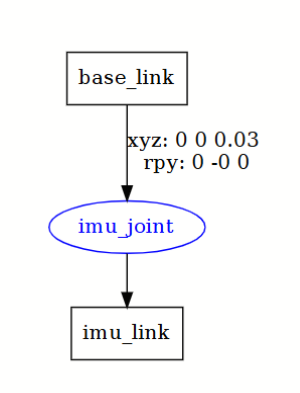
)rviz显示
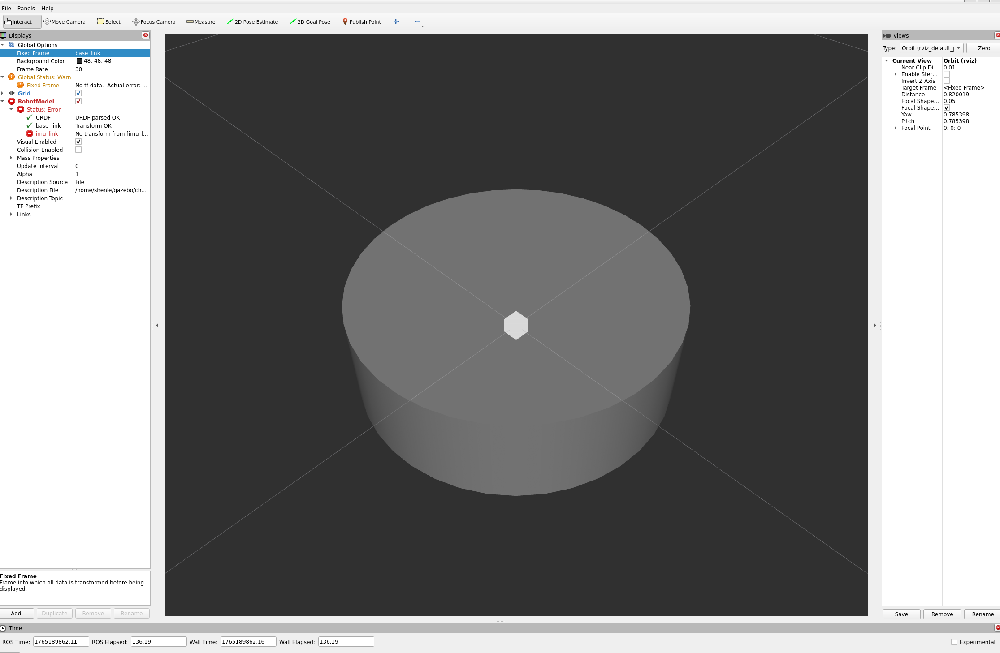
)节点连接有bug，还需要安装
shenle@shenlepc:~/gazebo/chapt6/chapt6_ws$ sudo apt install ros-$ROS_DISTRO-joint-state-publisher
shenle@shenlepc:~/gazebo/chapt6/chapt6_ws$ sudo apt install ros-$ROS_DISTRO-robot-state-publisher-
- -
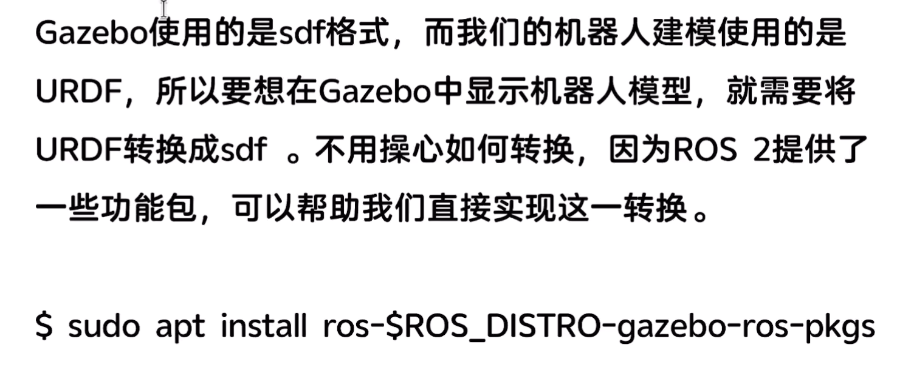
)shenle@shenlepc:~$ sudo apt install ros-$ROS_DISTRO-gazebo-ros-pkgs
- -
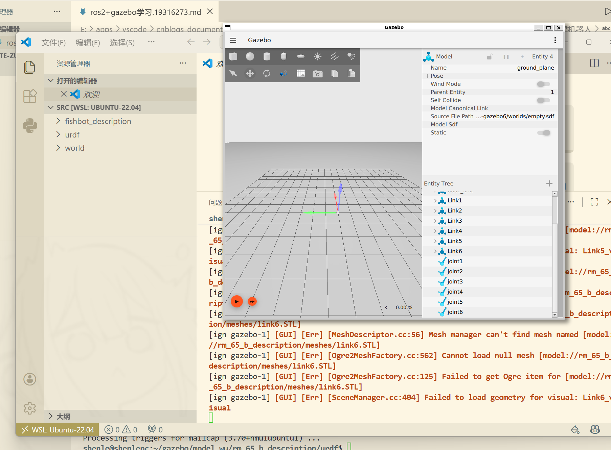
)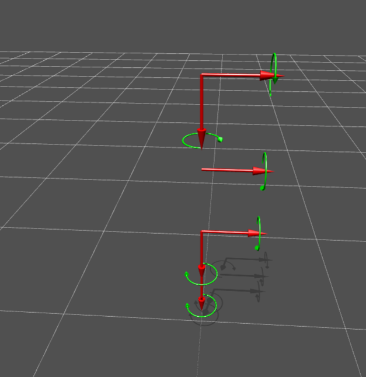
)